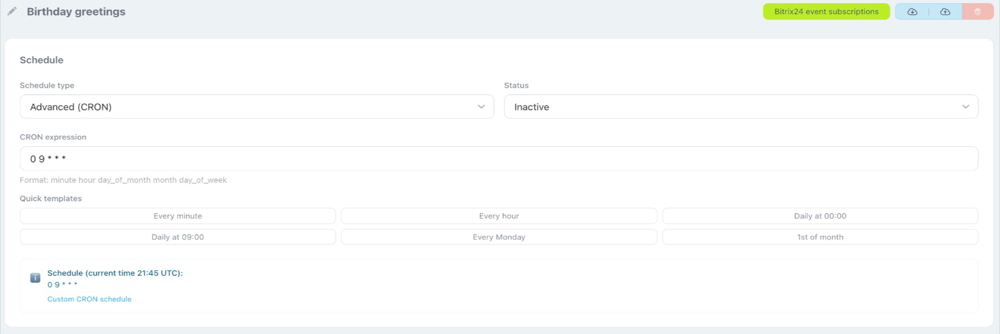

Cron jobs — scheduled tasks
A cron job works like a robot/activity in RoboREST: the same edit screen, Python code, test, and save. Detailed steps (editor, testing, logs, save, import/export) are in the create robot/activity guide.
Schedule and job status
On the cron job edit page, the Schedule block defines when the code runs and whether the job is enabled. You can choose simple (Simple Schedule) or advanced (Advanced / CRON) schedule type.

- Simple schedule: no manual CRON — pick a preset such as every minute, hour, day, and so on.
- Advanced (CRON): runs are defined with a CRON expression (five fields: minute, hour, day of month, month, day of week; the format is explained under the field). Quick templates are available — buttons like “Every minute”, “Daily at 09:00”, etc., that insert a ready-made expression.
- Status: Active or Inactive — inactive jobs do not run on schedule.
The bottom of the block usually shows a note with the current time (for example UTC) and the selected schedule.